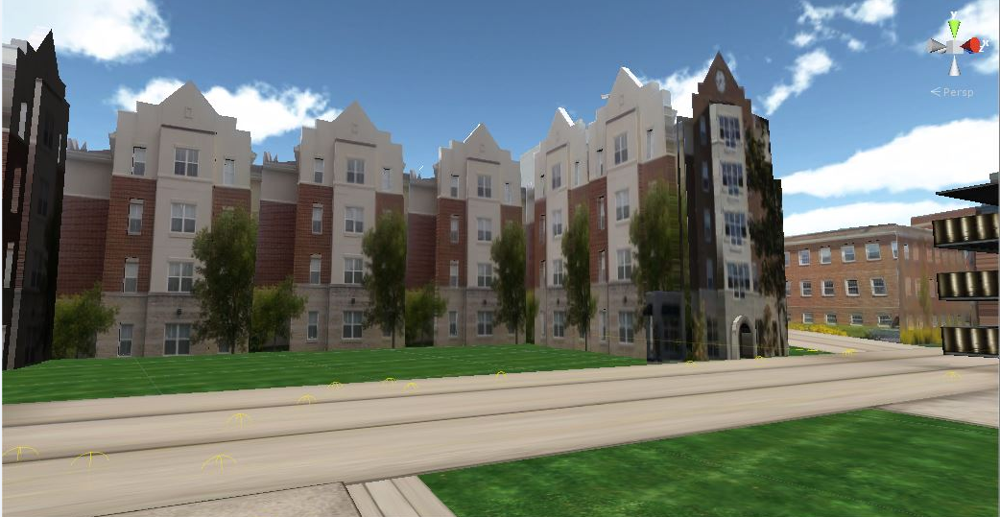
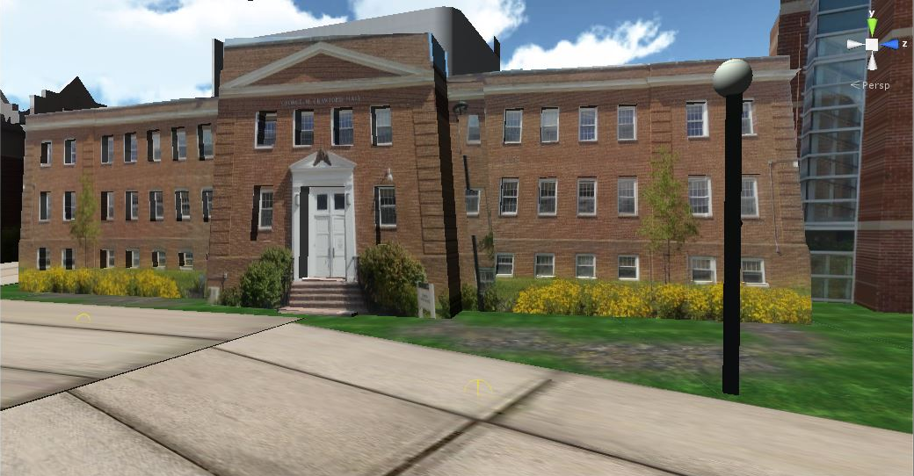

|
|
Current Students: Pranay Rajeev, Dexter Ballerda and Phillip Devreaux
Status: Current
The BSU university campus CVE environment is designed for corner cave and oculus rift head mounted display to give the user a complete immersive experience of the BSU campus. These virtual campus tours can be helpful to understand the campus environment and better know and navigate the university campus leaving the users no stress of walking or coming to campus just to view the campus. We hope our contribution helps in developing the virtual reality campus environment systems.
The VR lab has built a CVE (collaborative virtual environment) of BSU campus for performing virtual online campus tours and evacuation drills. Immersive collaborative virtual reality environment also offers a unique way for training in the emergencies for campus safety. The participant can enter the collaborative virtual reality environment setup on the cloud and participate in the evacuation drills or a tour which leads to considerable cost advantages over large scale real life exercises.
1) Using Corner Cave
 
 
Students are interacting with the CVE of the University Campus. They are inside a classroom in Computer Science builiding wearing 3D glasses and wand.
Click the below web Links to Open the BSU Campus on a browser (Use key board and mouse to navigate)
Link to Virtual BSU Tour with New Science Building
Link to Virtual BSU Tour
Link to Virtual BSU Tour
Interactive Old Virtual Tour
2) Using Oculus Rift
Our developed 3D environment was converted to an oculus prefab by adding the oculus prefabs and scripts on top of the player. This allows the player to navigate in the campus environment and have the sense of presence. While adding the player to the campus environment scene the default camera was replaced with the oculus rift camera prefab. The left part of the screen will be the left eye’s view and right part will be the right eye’s view while wearing the oculus rift.
Multi User Environment for evacuation drills for BSU campus using Occulus Rift
We have extended the project to perform virtual evacuation drills in the immersive collaborative virtual reality environment developed for Bowie State University Campus. Immersive collaborative virtual reality environment also offers a unique way for training in the emergencies for campus safety. The participants can enter the collaborative virtual reality environment setup on the cloud and participate in the evacuation drill or a tour which leads to considerable cost advantages over large scale real life exercises. This project presents an experimental design approach to gather data on human behavior and emergency response in a university campus environment among a set of players in an immersive virtual reality environment using occulus rift.
|
| |
 |
 |
| |
View of pond in Henry Circle |
View of Computer Science Building |
| |
 |
 |
| |
View of Student Halls |
View of Crawford Science Building |
|
| |
|
|
| |
|
|
| |
|
|
[Acknowledgement:This study is supported, in part, by National Science Foundation, Award HRD‐1137541 and Award Number: HRD-1238784]
Publications
- Sharma, S, Jerripothula, S., Devreaux, P., "An Immersive Collaborative Virtual Environment of a University Campus for performing Virtual Campus Evacuation drills and Tours for Campus Safety", proceedings of IEEE/ACM International Conference on Collaboration Technologies and Systems (CTS 2015), Atlanta, Georgia, USA,ISBN: 978-1-4673-7646-4, page 84-89, DOI: 10.1109/CTS.2015.7210404, June 01-05, 2015.
- Phillip Devreaux and Dr. Sharad Sharma, "Virtual Tour of University Campus Using Oculus Rift", Oral Presentation, at the Emerging Researchers National (ERN) Conference in STEM, hosted by AAAS, EHR and NSF, on Washington DC, on February 25-27, 2016.
- Isaac Amo-Frempong and Dr. Sharad Sharma, "Virtual Evacuation Drill in a Multi-user Environment", Oral Presentation, at the Emerging Researchers National (ERN) Conference in Science, Technology, Engineering and Mathematics (STEM), hosted by AAAS, EHR and NSF, Washington DC, February 19-21, 2015.
 VR LABORATORY (C) 2007-2016, ALL RIGHTS RESERVED
VR LABORATORY (C) 2007-2016, ALL RIGHTS RESERVED |


{kind=link}
{kind=link}
{kind=link}